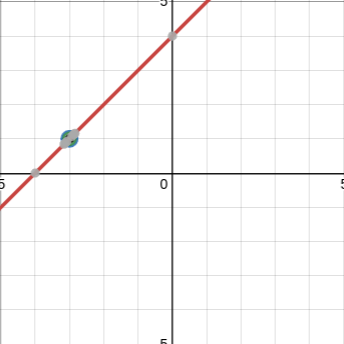

Graphs of Rational Functions
TL;DR: If a term is removed during simplification, then it becomes a hole, but if not it becoems an asymptote. (or, a restriction is added when it is removed)
If a graph is restricted from simplification from factorization, a hole occurs at that point.
Example
$$sg(x)=\frac{x^2+7x+12}{x+3}$$e
$$sg(x)=x+4; x\ne-3$$e
Since $sx$e cannot be $s-3$e , there is a hole in the line at $sx=-3$e . 
But, asymptotes occur instead of holes if the restrictions are zeroes after simplification.
Example
$$sh(x)=\frac{5}{x-8}; x\ne 8$$e